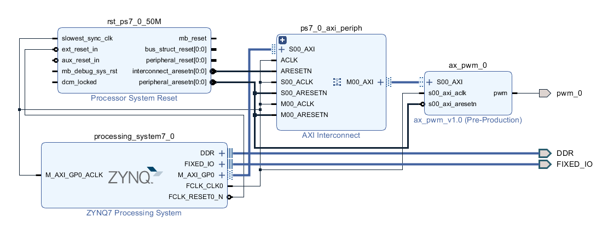
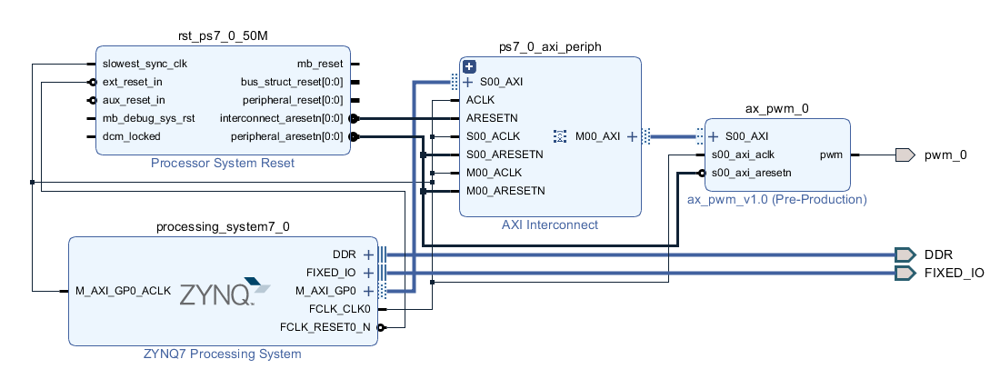

自定义IP实验¶
实验VIvado工程为“custom_pwm_ip”。
Xilinx官方为大家提供了很多IP核，在Vivado的IP Catalog中可以查看这些IP核， 用户在构建自己的系统中，不可能只使用Xilinx官方的免费IP核，很多时候需要创建属于自己的用户IP核，创建自己的IP核有很多好处，例如系统设计定制化；设计复用，可以在在IP核中加入license, 有偿提供给别人使用；简化系统设计和缩短设计时间。用ZYNQ系统设计IP核，最常用的就是使用AXI总线将PS同PL部分的IP核连接起来。本实验将为大家介绍如何在Vivado中构建AXI总线类型的IP核，此IP核用来产生一个PWM，用这个控制开发板上的LED，做一个呼吸灯的效果。
PWM介绍¶
我们经常使用PWM来控制LED，蜂鸣器等，通过调节脉冲的占空比来调节LED的亮度。
在其他开发板中我们使用过的一个pwm模块如下：
// // // // // Author: meisq // // msq@qq.com // // ALINX(shanghai) Technology Co.,Ltd // // heijin // // WEB: http://www.alinx.cn/ // // BBS: http://www.heijin.org/ // // // // Copyright (c) 2017,ALINX(shanghai) Technology Co.,Ltd // // All rights reserved // // // // This source file may be used and distributed without restriction provided // // that this copyright statement is not removed from the file and that any // // derivative work contains the original copyright notice and the associated // // disclaimer. // // // // Description: pwm model // pwm out period = frequency(pwm_out) * (2 ** N) / frequency(clk); // // Revision History: // Date By Revision Change Description //———– // 2017/5/3 meisq 1.0 Original `timescale 1ns / 1ps module ax_pwm #( parameter N = 32 //pwm bit width ) ( input clk, input rst, input[N - 1:0]period, input[N - 1:0]duty, output pwm_out ); reg[N - 1:0] period_r; reg[N - 1:0] duty_r; reg[N - 1:0] period_cnt; reg pwm_r; assign pwm_out = pwm_r; always@(posedge clk or posedge rst) begin if(rst==1) begin period_r <= { N {1’b0} }; duty_r <= { N {1’b0} }; end else begin period_r <= period; duty_r <= duty; end end always@(posedge clk or posedge rst) begin if(rst==1) period_cnt <= { N {1’b0} }; else period_cnt <= period_cnt + period_r; end always@(posedge clk or posedge rst) begin if(rst==1) begin pwm_r <= 1’b0; end else begin if(period_cnt >= duty_r) pwm_r <= 1’b1; else pwm_r <= 1’b0; end end endmodule |
可以看到这个PWM模块需要2个参数“period”、“duty”来控制频率和占空比，我们需要设计一些寄存器来控制这些参数，这里需要使用AXI总线，PS通过AXI总线来读写寄存器。
Vivado工程建立¶
创建一个vivado工程¶
创建一个名为“custom_pwm_ip”工程，添加zynq PS系统，并配置参数，具体方法可以参考前面方法
创建自定义IP¶
点击菜单“Tools->Create and Package IP…”
选择“Next”
选择创建一个新的AXI4设备
名称填写“ax_pwm”,描述填写“alinx pwm”，然后选择一个合适的位置用来放IP
- 下面参数可以指定接口类型、寄存器数量等，这里不需要修改，使用AXI Lite
Slave接口，4个寄存器。
点击“Finish”完成IP的创建
在“IP Catalog”中可以看到刚才创建的IP
- 这个时候的IP只有简单的寄存器读写功能，我们需要修改IP，选择IP，右键“Edit
in IP Packager”

这是弹出一个对话框，可以填写工程名称和路径，这里默认，点击“OK”
Vivado打开了一个新的工程
添加PWM功能的核心代码
添加代码时选择复制代码到IP目录
修改“ax_pwm_v1_0.v”，添加一个pwm输出端口
修改“ax_pwm_v1_0.v”，在例化“ax_pwm_V1_0_S00_AXI”,中添加pwm端口的例化
- 修改“ax_pwm_v1_0_s00_AXI.v”文件，添加pwm端口，这个文件是实现AXI4
Lite Slave的核心代码
修改“ax_pwm_v1_0_s00_AXI.v”文件，例化pwm核心功能代码，将寄存器slv_reg0和slv_reg1用于pwm模块的参数控制。
双击“component.xml”文件
在“File Groups”选项中点击“Merge changers from File Groups Wizard”

- 在“Customization Parameters”选项中点击“Merge changes form
Customization Parameters Wizard”

点击“Re-Package IP”完成IP的修改
添加自定义IP到工程¶
搜索“pwm”，添加“ax_pwm_v1.0”
点击“Run Block Automation”
点击“Run Connection Automation”

导出pwm端口
 

创建HDL文件
添加xdc文件分配管脚，把pwm_0输出端口分配给PL_LED1，做一个呼吸灯
set_property IOSTANDARD LVCMOS15 [get_ports pwm_0] set_property PACKAGE_PIN F5 [get_ports pwm_0] |
编译生成bit文件
Vitis软件编写调试¶
导出硬件


启动Vitis，新建APP，模板选择“Hello World”


{kind=link}
{kind=link}
{kind=link}
{kind=link}
{kind=link}
{kind=link}
{kind=link}
{kind=link}
{kind=link}
{kind=link}
{kind=link}
{kind=link}
{kind=link}
{kind=link}
{kind=link}
{kind=link}
{kind=link}
{kind=link}
{kind=link}
{kind=link}
{kind=link}
{kind=link}
前面的例都是使用xilinx的IP，xilinx大多都提供一套API，对于这个自定义IP，我们需要自己开发，先看看APP的目录下的资源，可以找到一个ax_pwm.h的文件，这个文件里包含里对自定义IP寄存器的读写宏定义

在bsp里找到“xparameters.h”文件，这个非常重要的文件，里面找到了自定IP的寄存器基地址，可以找到自定义IP的基地址。

有个寄存器读写宏和自定义IP的基地址，我们开始编写代码，测试自定义IP，我们先通过写寄存器AX_PWM_S00_AXI_SLV_REG0_OFFSET，控制PWM输出频率，然后通过写寄存器AX_PWM_S00_AXI_SLV_REG1_OFFSET控制PWM输出的占空比。
#include <stdio.h> #include “platform.h” #include “xil_printf.h” #include “ax_pwm.h” #include “xil_io.h” #include “xparameters.h” #include “sleep.h” unsigned int duty; int main() { init_platform(); print(“Hello World\n\r”); //pwm out period = frequency(pwm_out) * (2 ** N) / frequency(clk); AX_PWM_mWriteReg(XPAR_AX_PWM_0_S00_AXI_BASEADDR, AX_PWM_S00_AXI_SLV_REG0_OFFSET, 17179);//200hz while (1) { for (duty = 0x8fffffff; duty < 0xffffffff; duty = duty + 100000) { AX_PWM_mWriteReg(XPAR_AX_PWM_0_S00_AXI_BASEADDR, AX_PWM_S00_AXI_SLV_REG1_OFFSET, duty); usleep(100); } } cleanup_platform(); return 0; } |
通过运行代码，我们可以看到PL_LED1呈现出一个呼吸灯的效果。

通过debug，我们来查看一下寄存器

进入debug状态，按“F6”可以单步运行。

通过菜单可以查看“Memory”窗口

添加一个监视地址“0x43c00000”


单步运行，观察变化
{kind=link}
实验总结¶
通过本实验我们掌握了更多的Vitis调试技巧，掌握了ARM + FPGA开发的核心内容，就是ARM和FPGA数据交互。
常见问题¶
如何知道AXI IP的基地址¶
如下图所示，打开“Address Editor”，可以看到地址分配情况
{kind=link}
地址一般是Vivado自动分配，我们也可以修改地址
{kind=link}
ZYNQ-7000开发平台 FPGA教程 - Alinx官方网站